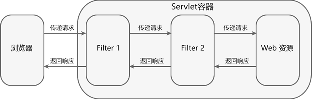
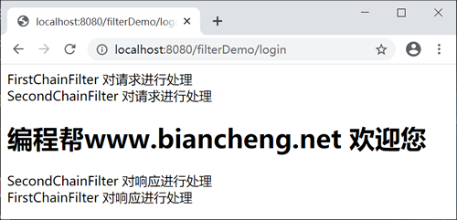

FilterChain过滤器链（Servlet）
在 Web 应用中，可以部署多个 Filter，若这些 Filter 都拦截同一目标资源，则它们就组成了一个 Filter 链（也称过滤器链）。过滤器链中的每个过滤器负责特定的操作和任务，客户端的请求在这些过滤器之间传递，直到传递给目标资源。
请求资源时，过滤器链中的过滤器依次对请求进行处理，并将请求传递给下一个过滤器，直到最后将请求传递给目标资源。发送响应信息时，则按照相反的顺序对响应进行处理，直到将响应返回给客户端。
过滤器并不是必须要将请求传递到下一个过滤器或目标资源，它可以自行对请求进行处理，并发送响应给客户端，也可以将请求转发给其他的目标资源。
通过 @WebFilter 注解配置的 Filter 过滤器，无法进行排序，若需要对 Filter 过滤器进行排序，建议使用 web.xml 进行配置。
在 net.biancheng.www.filter 包中，创建名称为 FirstChainFilter 的类，代码如下。
在 net.biancheng.www.filter 包中，创建名称为 SecondChainFilter 的类，代码如下。
在 web.xml 中配置过滤器，代码如下。
启动 Tomcat 服务器，在浏览器地址栏中输入“http://localhost:8080/filterDemo/login”，结果如下。
FilterChain 接口
javax.servlet 包中提供了一个 FilterChain 接口，该接口由容器实现。容器将其实例对象作为参数传入 Filter 对象的 doFilter() 方法中。Filter 对象可以使用 FilterChain 对象调用链中下一个 Filter 的 doFilter() 方法，若该 Filter 是链中最后一个过滤器，则调用目标资源的 service() 方法。FilterChain 接口中只有一个方法，如下表。| 返回值类型 | 方法 | 描述 |
|---|---|---|
| void | doFilter(ServletRequest request ,ServletResponse response) | 使用该方法可以调用过滤器链中的下一个 Filter 的 doFilter() 方法，若该 Filter 是链中最后一个过滤器，则调用目标资源的 service() 方法。 |
在 Filter.doFilter() 方法中调用 FilterChain.doFilter() 方法的语句前后增加某些程序代码，就可以在 Servlet 进行响应前后实现某些特殊功能，例如权限控制、过滤敏感词、设置统一编码格式等。
Filter 链的拦截过程
Filter 链的拦截过程如下图所示。

请求资源时，过滤器链中的过滤器依次对请求进行处理，并将请求传递给下一个过滤器，直到最后将请求传递给目标资源。发送响应信息时，则按照相反的顺序对响应进行处理，直到将响应返回给客户端。
过滤器并不是必须要将请求传递到下一个过滤器或目标资源，它可以自行对请求进行处理，并发送响应给客户端，也可以将请求转发给其他的目标资源。
过滤器链中的任何一个 Filter 没有调用 FilterChain.doFilter() 方法，请求都不会到达目标资源。
Filter 链中 Filter 的执行顺序
通过 web.xml 配置的 Filter 过滤器，执行顺序由 <filter-mapping> 标签的配置顺序决定。<filter-mapping> 靠前，则 Filter 先执行，靠后则后执行。通过修改 <filter-mapping> 的顺序便可以修改 Filter 的执行顺序。通过 @WebFilter 注解配置的 Filter 过滤器，无法进行排序，若需要对 Filter 过滤器进行排序，建议使用 web.xml 进行配置。
示例
在 net.biancheng.www.servlet 包中，创建名称为 LoginServlet 的类，代码如下。
package net.biancheng.www.servlet;
import javax.servlet.ServletException;
import javax.servlet.annotation.WebServlet;
import javax.servlet.http.HttpServlet;
import javax.servlet.http.HttpServletRequest;
import javax.servlet.http.HttpServletResponse;
import java.io.IOException;
/**
* @author 编程帮 www.biancheng.net
*/
@WebServlet("/login")
public class LoginServlet extends HttpServlet {
private static final long serialVersionUID = 1L;
public LoginServlet() {
super();
}
protected void doGet(HttpServletRequest request, HttpServletResponse response) throws ServletException, IOException {
response.setContentType("text/html;charset=UTF-8");
response.getWriter().write("<h1>编程帮www.biancheng.net 欢迎您</h1>");
}
protected void doPost(HttpServletRequest request, HttpServletResponse response) throws ServletException, IOException {
doGet(request, response);
}
}
在 net.biancheng.www.filter 包中，创建名称为 FirstChainFilter 的类，代码如下。
package net.biancheng.www.filter;
import java.io.IOException;
import java.io.PrintWriter;
import javax.servlet.Filter;
import javax.servlet.FilterChain;
import javax.servlet.FilterConfig;
import javax.servlet.ServletException;
import javax.servlet.ServletRequest;
import javax.servlet.ServletResponse;
/**
* 过滤器链
*
* @author 编程帮 www.biancheng.net
*/
public class FirstChainFilter implements Filter {
public FirstChainFilter() {
}
public void destroy() {
}
public void doFilter(ServletRequest request, ServletResponse response, FilterChain chain) throws IOException, ServletException {
//设置向页面输出的格式与编码
response.setContentType("text/html;charset=UTF-8");
PrintWriter writer = response.getWriter();
writer.write("FirstChainFilter 对请求进行处理<br/>");
chain.doFilter(request, response);
writer.write("FirstChainFilter 对响应进行处理<br/>");
}
public void init(FilterConfig fConfig) throws ServletException {
}
}
在 net.biancheng.www.filter 包中，创建名称为 SecondChainFilter 的类，代码如下。
package net.biancheng.www.filter;
import javax.servlet.*;
import java.io.IOException;
import java.io.PrintWriter;
/**
* 过滤器链
*
* @author 编程帮 www.biancheng.net
*/
public class SecondChainFilter implements Filter {
public SecondChainFilter() {
}
public void destroy() {
}
public void doFilter(ServletRequest request, ServletResponse response, FilterChain chain) throws IOException, ServletException {
//设置向页面输出的格式与编码
response.setContentType("text/html;charset=UTF-8");
PrintWriter writer = response.getWriter();
writer.write("SecondChainFilter 对请求进行处理<br/>");
chain.doFilter(request, response);
writer.write("SecondChainFilter 对响应进行处理<br/>");
}
public void init(FilterConfig fConfig) throws ServletException {
}
}
在 web.xml 中配置过滤器，代码如下。
<?xml version="1.0" encoding="UTF-8"?>
<web-app xmlns="http://xmlns.jcp.org/xml/ns/javaee"
xmlns:xsi="http://www.w3.org/2001/XMLSchema-instance"
xsi:schemaLocation="http://xmlns.jcp.org/xml/ns/javaee http://xmlns.jcp.org/xml/ns/javaee/web-app_4_0.xsd"
version="4.0">
<!--过滤器链中FirstChainFilter配置 -->
<filter>
<filter-name>FirstChainFilter</filter-name>
<filter-class>net.biancheng.www.filter.FirstChainFilter</filter-class>
</filter>
<filter-mapping>
<filter-name>FirstChainFilter</filter-name>
<url-pattern>/login</url-pattern>
</filter-mapping>
<!--过滤器链中SecondChainFilter配置 -->
<filter>
<filter-name>SecondChainFilter</filter-name>
<filter-class>net.biancheng.www.filter.SecondChainFilter</filter-class>
</filter>
<filter-mapping>
<filter-name>SecondChainFilter</filter-name>
<url-pattern>/login</url-pattern>
</filter-mapping>
</web-app>
启动 Tomcat 服务器，在浏览器地址栏中输入“http://localhost:8080/filterDemo/login”，结果如下。

关注公众号「站长严长生」，在手机上阅读所有教程，随时随地都能学习。内含一款搜索神器，免费下载全网书籍和视频。

微信扫码关注公众号